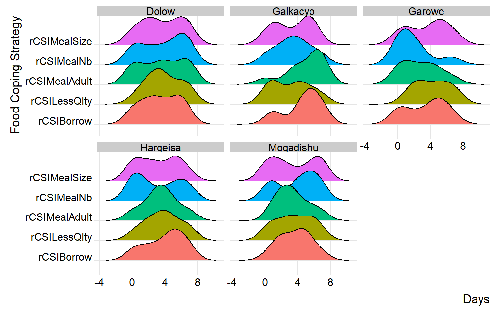
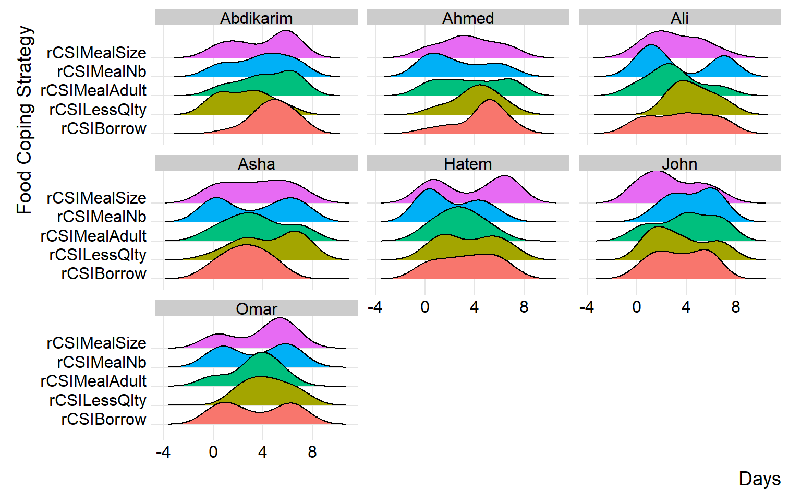

# required packages
library(tidyverse)
library(DT)
library(cleanR)
# load raw data
moda_data <- cleanR::survey_data %>% # converting HDDS variables to numeric
mutate(across(starts_with("HDDS"), as.numeric))Cleaning Food Security Indicators
This guide is designed to assist the WFP team in cleaning food security and livelihood data using the cleanR package. Our goal is to streamline the data cleaning process, ensuring consistency with the WFP Survey Designer for standardized variable naming.
Step 1: Load data
Start by uploading the raw data, typically the version downloaded from the MoDa server. Ensure that the data structure aligns with the WFP Survey Designer for consistent variable naming.
Step 2: Format data
The calculate_fsl_indicators function is a powerful tool for computing essential food security and livelihood (FSL) indicators, including the food consumption score, household dietary diversity, reduced coping strategy, and livelihood coping strategy, from your raw data.
raw_data <- calculate_fsl_indicators(data = moda_data,
# FCS
FCSStap = "FCSStap",
FCSPulse = "FCSPulse",
FCSPr = "FCSPr",
FCSVeg = "FCSVeg",
FCSFruit = "FCSFruit",
FCSDairy = "FCSDairy",
FCSFat = "FCSFat",
FCSSugar = "FCSSugar",
cutoff = "Cat28",
# rCSI
rCSILessQlty = "rCSILessQlty",
rCSIBorrow = "rCSIBorrow",
rCSIMealSize = "rCSIMealSize",
rCSIMealAdult = "rCSIMealAdult",
rCSIMealNb = "rCSIMealNb",
# HHS
HHhSNoFood_FR = "HHhSNoFood_FR",
HHhSBedHung_FR = "HHhSBedHung_FR",
HHhSNotEat_FR = "HHhSNotEat_FR",
# HDDS
# HDDSStapCer = "HDDSStapCer",
# HDDSStapRoot = "HDDSStapRoot",
# HDDSVeg = "HDDSVeg",
# HDDSFruit = "HDDSFruit",
# HDDSPrMeat = "HDDSPrMeat",
# HDDSPrEgg = "HDDSPrEgg",
# HDDSPrFish = "HDDSPrFish",
# HDDSPulse = "HDDSPulse",
# HDDSDairy = "HDDSDairy",
# HDDSFat = "HDDSFat",
# HDDSSugar = "HDDSSugar",
# HDDSCond = "HDDSCond"
)please note: you’ll only need to provide the variables names of the indicators you want to you in your analysis and its not required to specify all variables at all times (for instance, if you have data for FCS and rCSI only provide the arguments of these two indicators only).
Step 3: Use visualizations
By incorporating ridge charts into your analysis, you can easily identify patterns and variations in FCS and rCSI across different clusters or field monitors.
(plot_ridge_distribution(raw_data, numeric_cols = c("FCSStap", "FCSPulse", "FCSPr", "FCSVeg", "FCSFruit", "FCSDairy", "FCSFat", "FCSSugar"),
name_groups = "Food Groups", name_units = "Days", grouping = "Area_Office"))By carefully examining and interpreting the ridge chart, you can gain valuable insights into the distributions and flag any inconsistency for validation and review during data collection. in the below chart, we’ll group the reduced coping strategies at area office level.
(plot_ridge_distribution(raw_data, numeric_cols = c("rCSILessQlty", "rCSIBorrow", "rCSIMealSize", "rCSIMealAdult", "rCSIMealNb"),
name_groups = "Food Coping Strategy", name_units = "Days", grouping = "Area_Office"))
similarly, you can group distributions at field monitor level to gain more insight at the consistency of reported distributions across different monitors.
(plot_ridge_distribution(raw_data, numeric_cols = c("rCSILessQlty", "rCSIBorrow", "rCSIMealSize", "rCSIMealAdult", "rCSIMealNb"),
name_groups = "Food Coping Strategy", name_units = "Days", grouping = "EnumName"))
Step 4: Generate cleaning log file
To facilitate collaboration and feedback collection, generate a cleaning log file. This log file will document flagged issues, providing insights into potential problems and capturing correct values for any identified inconsistencies.
Data quality checks - Source: IMPACT Initiative, FSL Data Quality Checks
All low cereal or oil consumption (<= days), usually its not common to have such low consumption, check also how this low consumption is consistent with consumption of other food groups
Very high food consumption for meat and dairy (>=6) where there is low food consumption scores for cereals (<=4)
Check food consumption module for low and high food consumption of certain food groups
Check households with high meat and dairy consumption (>=6) while reporting high coping strategy
Check for patterns of data entry like same entry repeated many times (7,7,7,7) or alternating numbers (2,1,2,1,2,1)
The above checks are adopted from IMPACT Initiative FSL data quality checks guide and they are pre-coded with the fsl_cleaning_log function. So, if there are any other checks that you have to apply.
# fsl_clog <- fsl_cleaning_log(data = raw_data, uuid = "uuid")
# datatable(fsl_clog, list(dom = 't'))Congratulations on generating the cleaning log! To proceed, refer to the other documentation for incorporating the corrected cleaning log file into the raw data to generate the clean data.